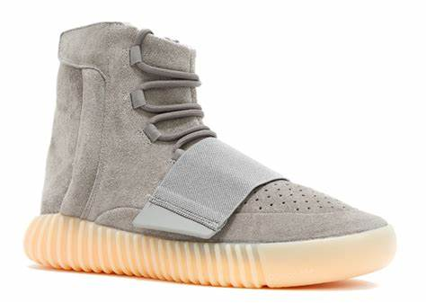
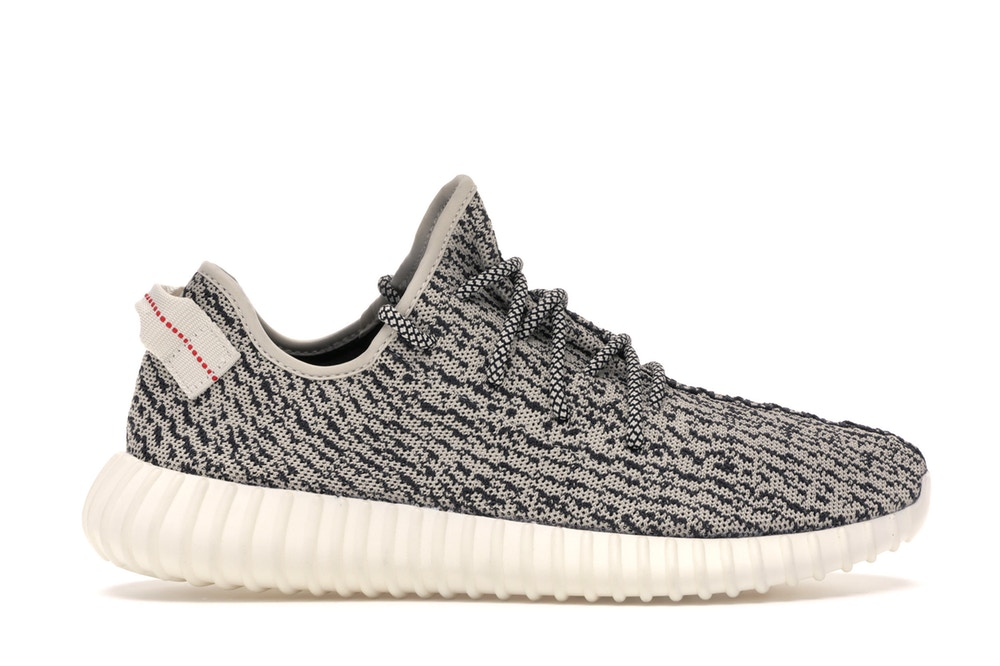
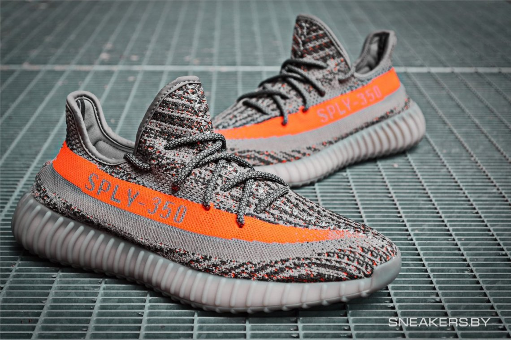

Kanye West is an American rapper, singer, songwriter, record producer, entrepreneur, and fashion designer. His music has spanned a broad range of styles, incorporating an eclectic range of influences including soul, baroque pop, electro, indie rock, synth-pop, industrial, and gospel.
The first Kanye West x adidas Yeezy was the Yeezy Boost 750, a grey/white high-top sneaker. It released in February 2015 during All-Star Weekend. What followed was the release of the Yeezy Boost 350 for in four colorways (Turtle Dove, Pirate Black, Moonrock, and Oxford Tan), the Yeezy 950 Duckboot, Yeezy Boost 750 (Core Black, Glow in The Dark, and Light Brown), and Yeezy Boost 350 v2 (Beluga, Copper, Olive Green, Solar Red, Black/White, and Zebra).
Yeezy Boost 750 / February 2015

Yeezy Boost 350--Turtle Dove

Yeezy Boost 350 v2--Beluga / October 2017

All Content Copyright © 2019, Aaron Li